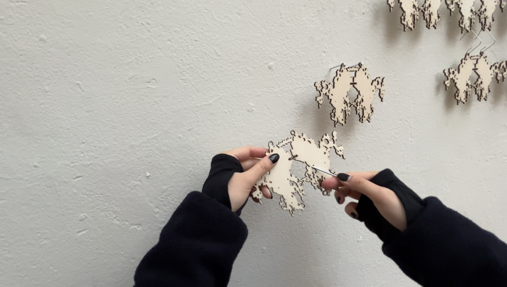
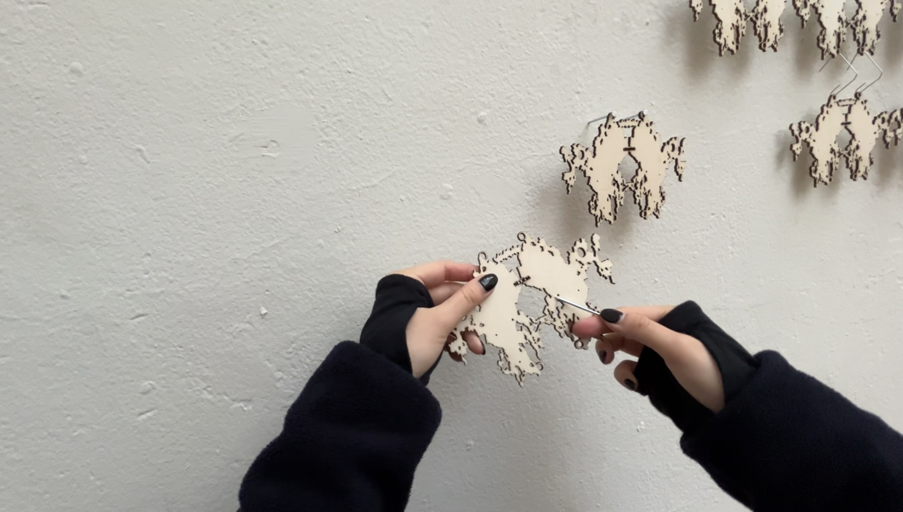

olvehyh
« Utopia Typography Project »
Inspired by FBI documents, 'Utopian files' is a re-design of Bernadette Mayer's novel Utopia. Attached photographs were taken by Bernadette Mayer herself.
Accompanied by a textile installation inspired by chainmail body armor, composed of 74 Rorschach-inspired shapes, all lasercut from 3mm birch panels.
Accompanied by a textile installation inspired by chainmail body armor, composed of 74 Rorschach-inspired shapes, all lasercut from 3mm birch panels.
Document Publication | Textile Installation | Typesetting | Graphic Design | Lasercutting
(Document Publication)
31 pages | 5 folders | 225 ✕ 310 mm | English
Typeface: Courier
Paper: Metallic 100g
Printer: KABK Print Workshop
(Textile Installation)
2000 ✕ 1500 mm
Material: Birch
Den Haag 2023
(Document Publication)
31 pages | 5 folders | 225 ✕ 310 mm | English
Typeface: Courier
Paper: Metallic 100g
Printer: KABK Print Workshop
(Textile Installation)
2000 ✕ 1500 mm
Material: Birch
Den Haag 2023
 
